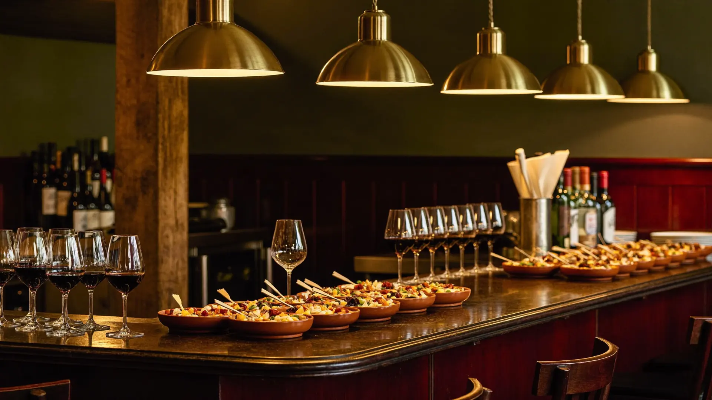
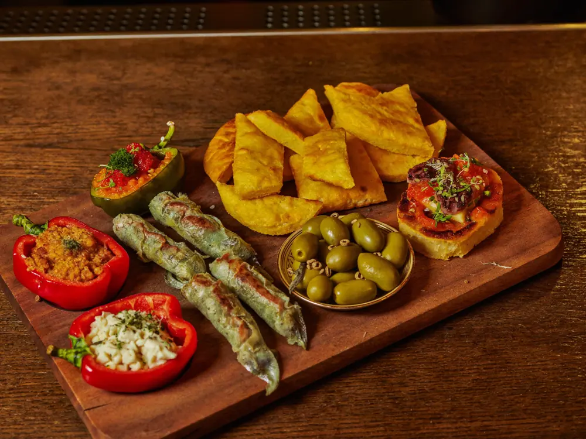
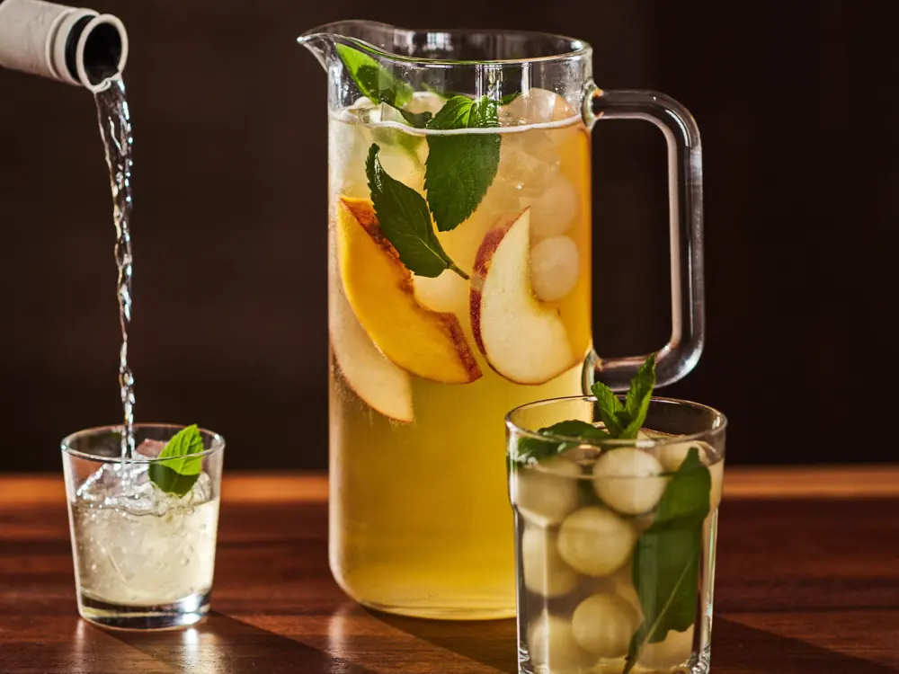
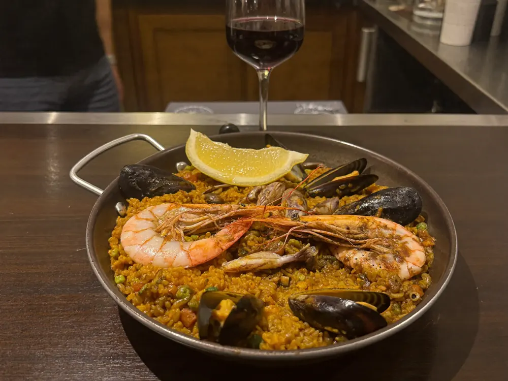

Tapas caseras y sangría en el Carrer Torroella de Montgrí. De 10 a 20 € y la cocina abierta hasta medianoche.

Las tapas
Si se lee lo que escribe la gente sobre Cal Happy, no hay discusión posible: la palabra "tapas" aparece en 45 opiniones. Ninguna otra cosa se le acerca. Y quien las prueba repite dos cosas: que son caseras y que son abundantes.
opiniones distintas nombran las tapas. La siguiente palabra más repetida, "bar", aparece en 14.
Qué hay
Hechas en casa y muy abundantes, según quien las ha probado.
El plato grande de la casa, marcado como popular en Google.
Hay quien escribe que es la mejor que ha bebido.
Aquí también se viene a tomar algo, no solo a comer.



Lo que dicen
La mejor sangría blanca que he bebido. ¡Gran acogida! Lo recomiendo.
Sencillo pero bueno. Excelente relación calidad-precio. Acogida siempre simpática.
Platos y tapas muy variados. Pedimos una decena entre dos y era muchísimo. Las tapas son muy abundantes y muy buenas, muy variadas y hechas en casa. Tomamos dos sangrías, excelentes.
Horario
Cuando media L'Escala ya ha cerrado la cocina, aquí todavía se puede cenar.
Cómo llegar
En el Carrer Torroella de Montgrí, dentro del Wine Palace de L'Escala. En sala, para llevar y a domicilio.
Llamar ahora Abrir en MapsPreguntas frecuentes
Las tapas. Se nombran en 45 opiniones, muy por delante de cualquier otra cosa, y son caseras.
Hasta las 00:00. De los pocos sitios de L'Escala donde se puede cenar tarde.
De 10 a 20 € por persona, uno de los rangos más asequibles del pueblo.
En el Carrer Torroella de Montgrí, 17, dentro del Wine Palace de L'Escala. El código Plus es 447H+XG.
Sí, y también a domicilio, además del servicio en sala.